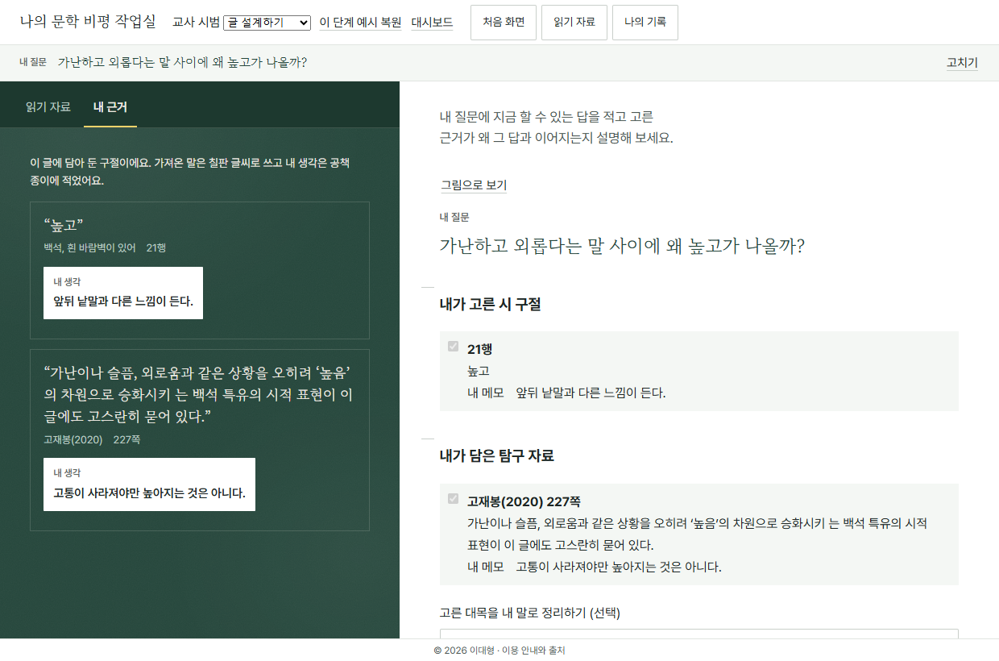

학생은 이렇게 씁니다
평가기준 함께 읽기
세 평가요소의 뜻을 적고 예시 글에 수준을 매깁니다. 두 가상 학생의 작성 기록을 보고 자신의 AI 활용 규칙도 정합니다.
시어에서 근거로
마음에 남은 시어로 질문을 만들고 시와 탐구 자료에서 근거를 모읍니다. 글 설계에서 앞서 고른 대목과 메모를 다시 펼쳐 자기 답을 씁니다.
초고에서 고쳐쓰기로
초고를 자기평가하고 AI에게 물을 내용을 다듬습니다. 버튼을 누르면 요청과 초고가 함께 복사됩니다. 피드백을 참고해 자기 말로 고친 뒤 다시 평가하고 제출합니다.
교사는 이렇게 보여 줍니다
교사 대시보드에서 시범 글을 열고 오늘 보여 줄 단계를 고르세요. ‘높고’를 읽고 쓴 예시가 미리 들어 있습니다. 학생들과 다른 해석을 의논하며 직접 수정하거나, 그 단계만 기본 예시로 되돌릴 수 있습니다.
교사 시범 글은 학생 통계와 분리됩니다. 수업 중 대시보드에서 보이는 작성 시간, 화면 이탈, 복사·붙여넣기 기록은 학생이 어떤 과정을 거쳤는지 대화할 때 참고하세요.
우리 학교에 설치하기
교사와 학생이 같은 도메인의 Google Workspace 학교 계정을 사용해야 합니다. 학교마다 교사가 소유하는 스프레드시트 사본에 학생 글과 작성 기록이 쌓입니다.
학교용 템플릿 사본 만들기 ↗- 학교 교사 계정으로 사본을 만드세요. 사본에는 작업실 프로그램이 함께 들어 있습니다. 시트의 편집 권한은 운영 교사가 관리합니다.
- 시트의 ‘작업실 관리 → 처음 설정’을 누르세요. 처음에는 Google 권한 확인이 필요합니다. 메뉴가 보이지 않으면 시트를 새로고침하세요. 실행한 교사와 기본 학급 ‘1반’이 등록됩니다.
- 수업 자료를 채우세요. Works 시트에서 주 작품의 bodyText에 행을 나눠 시 본문을 입력하세요. Excerpts에는 겹치지 않는 excerptId, Papers와 일치하는 paperId, 쪽수, excerptText를 넣습니다. 학교에서 사용할 권한이 있는 본문과 발췌문을 등록하세요.
- 학생이 접속할 웹앱 주소를 만드세요. 시트의 ‘확장 프로그램 → Apps Script → 배포 → 새 배포’에서 유형을 ‘웹 앱’으로 고릅니다. 실행 사용자는 배포하는 교사, 액세스 대상은 학교 도메인 사용자로 설정하고 배포합니다. 학교 정책으로 이 항목이 보이지 않으면 학교 Workspace 관리자에게 확인하세요.
- 교사와 학생 화면을 각각 확인하세요. 발급된 웹앱 주소를 교사 계정으로 열어 관리 화면에서 학생을 등록합니다. 등록된 학생 계정으로 시어 선택과 저장을 확인한 뒤, 학생들에게 웹앱 주소를 안내하세요.
만든 사람과 이용 안내
© 2026 이대형 · 나의 문학 비평 작업실
공식 템플릿의 사본을 설치해 수업에 사용할 수 있습니다. 관리자 설정에서 명단과 자료를 바꾸거나 동료 교사에게 공식 배포 페이지를 공유할 수 있습니다.
이대형의 사전 허락 없이 제작 코드를 복제하거나 변형하여 별도 앱을 만들거나, 코드와 변경한 사본을 재배포할 수 없습니다. AI 도구를 사용한 변형과 재배포에도 같은 조건이 적용됩니다. 제작자와 출처 표시를 유지해 주세요. 외부 저작물은 각 권리자의 이용 조건을 따릅니다.
작품과 탐구 자료
- 백석, 「흰 바람벽이 있어」. 『문장』 3권 4호(1941년 4월). 학교 수업용 본문은 김수학 외 『공통국어2』(천재교과서), 144~145쪽.
- 백석, 「내가 생각하는 것은」, 「통영 2」. 윤동주, 「별 헤는 밤」. 학교별 사용 판본은 설치 교사가 자료에 표시합니다.
- 박준, 「빛, 두부, 우동, 돌」, 『기쁨에도 슬픔에도 아랑곳없이』, 50~51쪽.
- 소필균(2019), 「백석 「힌 바람벽이 있어」의 인지체계－감성기호 정신공간을 중심으로－」, 『비평문학』 72, 95~123쪽.
- 고재봉(2020), 「재만 시기 백석의 산문과 「흰 바람벽이 있어」의 창작 과정 연구」, 『비교한국학』 28(3), 207~242쪽.
- 김응교(2011), 「신경(新京)에서, 백석 「흰 바람벽이 있어」－시인 백석 연구(4)－」, 『인문과학』 48, 33~63쪽.
- 안도현(2014), 『백석 평전』, 다산북스. 전자책은 자료에 표시된 장·문단을 따릅니다.
수업 설계와 제작 자료
- 장은경, 「AI시대 평가리프레이밍」 강의자료, 22·25·33·38쪽. 강의자료에 제시된 브룩하트의 루브릭 사례를 참고했습니다.
- 『질문과 평가로 깊어지는 수업』(푸른칠판, 2026), 「질문 정교화를 배우는 수업」, 110쪽.
- 글꼴: Pretendard, 네이버 마루 부리. 글꼴별 배포 조건은 원 배포처를 따릅니다.
- A·B 작성 기록과 시범 글은 수업용 예시입니다.